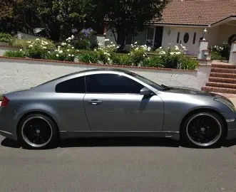
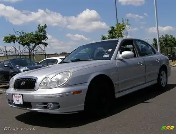
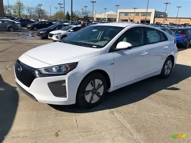

Over the last 11 years My luck has been tested through and through when it comes to my vehicles. I would say that I have probably had more cars in my possesion than many people have ever had. I have counted a total of about 7 vehicles since I first recieved my license in 2015. The reason I wanted to make a page about my cars is because I recently lost my most recent car and it inspired me to want to relive the moments shared with all of my cars. Depicted below is a list of the Cars with photos. To learn more about my experience for these vehicles please click the button that says "NEXT PAGE".


